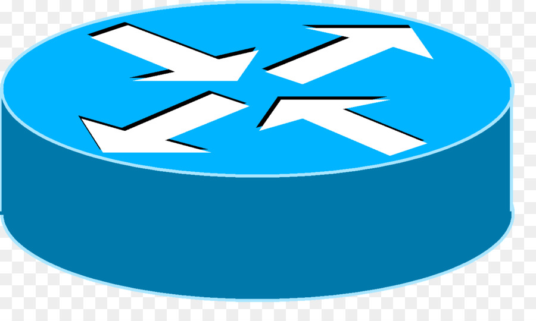

Tipos routers
Los encaminadores pueden proporcionar conectividaddentro de las empresas, entre las empresas e Internet, y en el interior de proveedores de servicios de Internet (ISP). Los encaminadores más grandes (por ejemplo, el Alcatel-Lucent 7750 SR) interconectan ISP, se suelen llamar metro encaminador, o pueden ser utilizados en grandes redes de empresas
Conectividad Small Office, Home Office (SOHO) editar
Los encaminadores se utilizan con frecuencia en los hogares para conectar a un servicio de banda ancha, tales como IP sobre cable o ADSL. Un encaminador usado en una casa puede permitir la conectividad a una empresa a través de una red privada virtual.
Si bien son funcionalmente similares a los encaminadores, los encaminadores residenciales usan traducción de dirección de red en lugar de direccionamiento.
En lugar de conectar ordenadores locales a la red directamente, un encaminador residencial debe hacer que los ordenadores locales parezcan ser un solo equipo.
Encaminador de empresa
En las empresas se pueden encontrar encaminadores de todos los tamaños. Si bien los más poderosos tienden a ser encontrados en ISP, instalaciones académicas y de investigación, pero también en grandes empresas.
- AccesoLos encaminadores de acceso, incluyendo SOHO, se encuentran en sitios de clientes como sucursales que no necesitan de encaminamiento jerárquico de los propios. Normalmente, son optimizados para un bajo costo.
- DistribuciónLos encaminadores de distribución agregan tráfico desde encaminadores de acceso múltiple, ya sea en el mismo lugar, o de la obtención de los flujos de datos procedentes de múltiples sitios a la ubicación de una importante empresa. Los encaminadores de distribución son a menudo responsables de la aplicación de la calidad del servicio a través de una WAN, por lo que deben tener una memoria considerable, múltiples interfaces WAN, y transformación sustancial de inteligencia.
- NúcleoEn las empresas, el enrutador de núcleo puede proporcionar una "columna vertebral" interconectando la distribución de los niveles de los encaminadores de múltiples edificios de un campus, o a las grandes empresas locales.Tienden a ser optimizados para ancho de banda alto.
Los encaminadores de borde enlazan sistemas autónomos con las redes troncales de Internet u otros sistemas autónomos , tienen que estar preparados para manejar el protocolo BGP y si quieren recibir las rutas BGP, deben poseer una gran cantidad de memoria.
Encaminadores inalámbricos
A pesar de que tradicionalmente los encaminadores solían tratar con redes fijas (Ethernet, ADSL, RDSI...) , en los últimos tiempos han comenzado a aparecer encaminadores que permiten realizar una interfaz entre redes fijas y móviles (Wi-Fi, GPRS, Edge, UMTS, Fritz!Box, WiMAX...) Un encaminador inalámbrico comparte el mismo principio que un encaminador tradicional. La diferencia es que éste permite la conexión de dispositivos inalámbricos a las redes a las que el encaminador está conectado mediante conexiones por cable. La diferencia existente entre este tipo de encaminadores viene dada por la potencia que alcanzan, las frecuencias y los protocolos en los que trabajan.